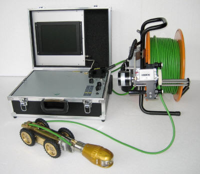

Działalność firmy Gorkan skierowana jest dla firm budowlanych, przedsiębiorstw, zakładów produkcyjnych, urzędów miast i gmin, spółdzielni mieszkaniowych, centrów handlowych, zarządów dróg, osób prywatnych i wielu innych na terenie całego kraju.
Czyszczenie kanalizacji jest niezbędne do poprawnego przeprowadzenia inspekcji TV. Wykonując czyszczenie kanalizacji, rury zostają przygotowane pod inspekcję, dzięki czemu ewentualne defekty i uszkodzenia zostają łatwo wychwycone.
Aby w pełni przeprowadzić profesjonalne kamerowanie kanalizacji zachęcamy do skorzystania z usługi czyszczenia kanalizacji.